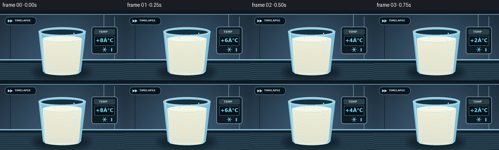
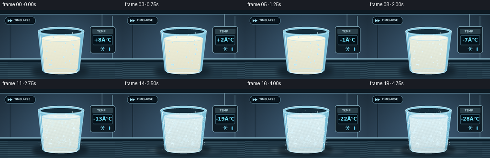

CODING AGENTS AS PIXEL WORLD MODELS
traex/GPT-5.6-Sol · phygen_093
点击播放 · 原生 RGB 像素
逐轮保存的候选
回放视频、检查图与代码变化。
每份候选均可单独播放。实际图片检查记录在下方工具轨迹中。
候选 01播放与检查图
点击播放 · 原生 RGB 像素


展开代码变化
--- 上一保存版本
+++ 本次保存版本
@@ -0,0 +1,230 @@
+from pathlib import Path
+import math
+import numpy as np
+from PIL import Image, ImageDraw, ImageFont, ImageFilter
+import artifact_io
+
+CASE_DIR = Path(__file__).resolve().parent
+W, H, N = 256, 144, 20
+S = 4
+rng = np.random.default_rng(9301)
+
+# Fixed details ensure the timelapse changes continuously rather than flickering.
+frost_points = [(float(rng.uniform(83,173)), float(rng.uniform(42,126)), float(rng.uniform(.35,1.15)), float(rng.uniform(0,1))) for _ in range(230)]
+crystal_seeds = [(float(rng.uniform(96,160)), float(rng.uniform(62,116)), float(rng.uniform(2.0,6.0)), float(rng.uniform(.05,.82))) for _ in range(31)]
+droplets = [(float(rng.uniform(84,172)), float(rng.uniform(45,116)), float(rng.uniform(.5,1.45))) for _ in range(30)]
+
+font_path = "/usr/share/fonts/truetype/dejavu/DejaVuSans.ttf"
+bold_path = "/usr/share/fonts/truetype/dejavu/DejaVuSans-Bold.ttf"
+
+def font(size, bold=False):
+ return ImageFont.truetype(bold_path if bold else font_path, int(size*S))
+
+def q(v): return int(round(v*S))
+def box(b): return tuple(q(x) for x in b)
+
+def smooth(x):
+ x = max(0.0, min(1.0, x))
+ return x*x*(3-2*x)
+
+def line(draw, pts, fill, width=1):
+ draw.line([(q(x),q(y)) for x,y in pts], fill=fill, width=max(1,q(width)), joint="curve")
+
+def snowflake(draw, cx, cy, r, color, width=.65):
+ for a in (0, math.pi/3, 2*math.pi/3):
+ dx,dy=math.cos(a),math.sin(a)
+ line(draw, [(cx-r*dx,cy-r*dy),(cx+r*dx,cy+r*dy)], color, width)
+ for sign in (-1,1):
+ bx=cx+sign*r*.62*dx; by=cy+sign*r*.62*dy
+ for aa in (-.55,.55):
+ # small branch points back toward center
+ ang=a + (math.pi if sign<0 else 0) + aa
+ line(draw, [(bx,by),(bx-r*.23*math.cos(ang),by-r*.23*math.sin(ang))], color, width*.72)
+
+def draw_crystal(draw, cx, cy, r, alpha):
+ color=(218,246,255,int(alpha))
+ snowflake(draw,cx,cy,r,color,.43)
+
+def render_frame(idx):
+ t = idx/(N-1)
+ freeze = smooth((t-.17)/.70)
+ temp = 8 - 36*t
+
+ # freezer interior: blue-gray brushed metal, with cold corners
+ hh, ww = H*S, W*S
+ yy,xx=np.mgrid[0:hh,0:ww]
+ yb=yy/S; xb=xx/S
+ base=np.zeros((hh,ww,3),dtype=np.float32)
+ v=1 - 0.16*((xb-W/2)/(W/2))**2
+ base[:,:,0]=(31+26*yb/H)*v
+ base[:,:,1]=(49+35*yb/H)*v
+ base[:,:,2]=(63+46*yb/H)*v
+ # cool glow behind subject and fine fixed film grain
+ glow=np.exp(-(((xb-128)/93)**2+((yb-56)/75)**2))
+ base += glow[:,:,None]*np.array([12,18,22])[None,None,:]
+ grain=np.random.default_rng(1200+idx).normal(0,0.7,(hh,ww,1))
+ base=np.clip(base+grain,0,255).astype(np.uint8)
+ im=Image.fromarray(base,"RGB").convert("RGBA")
+ d=ImageDraw.Draw(im,"RGBA")
+
+ # freezer seams, upper reflections, and shelf
+ d.rectangle(box((0,0,256,8)), fill=(13,25,34,145))
+ d.rectangle(box((0,8,256,9)), fill=(119,166,188,55))
+ line(d,[(21,13),(21,101)],(8,21,30,90),.7)
+ line(d,[(235,13),(235,101)],(132,180,197,40),.7)
+ d.rectangle(box((0,101,256,144)), fill=(30,52,66,255))
+ d.rectangle(box((0,101,256,103)), fill=(146,196,214,90))
+ d.rectangle(box((0,105,256,108)), fill=(10,27,38,105))
+ # shelf texture
+ for k in range(9):
+ y=110+k*4
+ line(d,[(0,y),(256,y+2)],(114,158,174,8+k),.35)
+
+ # top-left timelapse badge
+ d.rounded_rectangle(box((10,14,74,30)), radius=q(7), fill=(8,20,29,170), outline=(136,192,214,80), width=q(.5))
+ # double fast-forward triangles
+ d.polygon([(q(16),q(19)),(q(16),q(25)),(q(21),q(22))],fill=(164,224,241,220))
+ d.polygon([(q(21),q(19)),(q(21),q(25)),(q(26),q(22))],fill=(164,224,241,220))
+ d.text((q(30),q(18)),"TIMELAPSE",font=font(5.3,True),fill=(212,238,246,225))
+
+ # Temperature monitor, unmistakably showing falling temperature.
+ # small cable/temperature probe
+ line(d,[(213,9),(213,36)],(125,160,175,170),1.1)
+ d.rounded_rectangle(box((188,34,241,90)),radius=q(5),fill=(14,27,36,235),outline=(133,175,192,185),width=q(1))
+ d.rounded_rectangle(box((193,39,236,50)),radius=q(2),fill=(42,63,73,255))
+ d.text((q(203),q(41)),"TEMP",font=font(5.8,True),fill=(175,205,215,255))
+ d.rounded_rectangle(box((194,53,235,73)),radius=q(2),fill=(3,16,24,255),outline=(77,126,146,210),width=q(.7))
+ reading=f"{temp:+.0f}°C"
+ # center text manually
+ fnt=font(10.4,True)
+ bb=d.textbbox((0,0),reading,font=fnt)
+ d.text((q(214.5)-(bb[2]-bb[0])//2,q(56)),reading,font=fnt,fill=(114,226,255,255))
+ snowflake(d,214.5,81,5,(124,219,246,230),.65)
+ # blue indicator ticks intensify
+ for j in range(4):
+ col=(94,206,241, int(60+165*max(0,min(1,t*4-j))))
+ d.rounded_rectangle(box((228+j*0,78+j*0,230,85)),radius=q(1),fill=col)
+ break
+
+ # cast shadow changes from soft to cooler hard shadow
+ shadow=Image.new("RGBA",im.size,(0,0,0,0)); sd=ImageDraw.Draw(shadow,"RGBA")
+ sd.ellipse(box((70,116,183,140)),fill=(3,12,19,int(105+25*freeze)))
+ shadow=shadow.filter(ImageFilter.GaussianBlur(q(5-2*freeze)))
+ im=Image.alpha_composite(im,shadow); d=ImageDraw.Draw(im,"RGBA")
+
+ # glass outer body, rear glass and rim
+ outer=[(79,43),(176,43),(166,126),(160,131),(94,131),(88,126)]
+ d.polygon([(q(x),q(y)) for x,y in outer],fill=(129,194,218,23),outline=(180,225,240,120))
+ d.ellipse(box((79,35,176,54)),fill=(143,207,228,23),outline=(197,233,244,150),width=q(1.1))
+ d.ellipse(box((84,39,171,51)),fill=(22,47,61,65),outline=(164,218,236,90),width=q(.7))
+
+ # milk body mask, with subtly rising level as it freezes/expands
+ surface_y=58.5-2.6*freeze + math.sin(t*math.pi*4)*(.45*(1-freeze))
+ mask=Image.new("L",im.size,0); md=ImageDraw.Draw(mask)
+ md.polygon([(q(87),q(surface_y)),(q(168),q(surface_y)),(q(162),q(123)),(q(157),q(127)),(q(97),q(127)),(q(92),q(123))],fill=255)
+ md.ellipse(box((92,118,162,134)),fill=255)
+ milk=np.zeros((hh,ww,4),dtype=np.uint8)
+ # milk turns from warm opaque liquid to cool, crystalline white
+ vert=np.clip((yb-surface_y)/70,0,1)
+ warm=np.array([238,238,216]); frozen=np.array([219,239,243])
+ col=warm*(1-freeze)+frozen*freeze
+ for c in range(3): milk[:,:,c]=np.clip(col[c]-(10+5*freeze)*vert,0,255)
+ # stable granular texture emerges with freezing
+ tex=(np.sin(xb*.82+yb*.39)+np.sin(xb*.22-yb*.91))*0.5
+ milk[:,:,:3]=np.clip(milk[:,:,:3].astype(float)+tex[:,:,None]*(1+4*freeze),0,255).astype(np.uint8)
+ milk[:,:,3]=np.array(mask)
+ im=Image.alpha_composite(im,Image.fromarray(milk,"RGBA")); d=ImageDraw.Draw(im,"RGBA")
+
+ # liquid/solid top surface. Liquid has a smooth warm highlight; solid grows jagged crust.
+ top_col=(246-int(18*freeze),246-int(7*freeze),226+int(21*freeze),255)
+ d.ellipse(box((87,surface_y-6,168,surface_y+7)),fill=top_col,outline=(194,226,233,210),width=q(.8))
+ # moving liquid highlight disappears as motion arrests
+ wave_amp=(1-freeze)*1.1
+ wave=[]
+ for x in np.linspace(94,161,35):
+ y=surface_y + wave_amp*math.sin(x*.20+t*math.pi*3)
+ wave.append((x,y))
+ line(d,wave,(255,255,244,int(175*(1-freeze))),.8)
+
+ # freezing front spreading inward across top, pale blue irregular patches
+ if freeze>0:
+ crust=Image.new("RGBA",im.size,(0,0,0,0)); cd=ImageDraw.Draw(crust,"RGBA")
+ # edge crescents and radial crystalline islands
+ a=int(65+145*freeze)
+ cd.arc(box((88,surface_y-6,168,surface_y+7)),180,360,fill=(193,232,242,a),width=q(1+3*freeze))
+ cd.arc(box((88,surface_y-6,168,surface_y+7)),0,180,fill=(185,226,239,a),width=q(1+3*freeze))
+ for j,(cx,cy,rad,th) in enumerate(crystal_seeds[:14]):
+ if freeze>th:
+ rr=min(rad,rad*(freeze-th)/.25)
+ # squeeze vertical radius to top plane
+ cd.ellipse(box((cx-rr,surface_y-rr*.25+(j%3-1),cx+rr,surface_y+rr*.25+(j%3-1))),fill=(214,241,247,int(90+100*freeze)))
+ im=Image.alpha_composite(im,crust); d=ImageDraw.Draw(im,"RGBA")
+
+ # Internal milk ice crystals, clipped to milk silhouette.
+ cryst=Image.new("RGBA",im.size,(0,0,0,0)); cd=ImageDraw.Draw(cryst,"RGBA")
+ for cx,cy,rad,threshold in crystal_seeds:
+ if freeze>threshold:
+ grow=min(1,(freeze-threshold)/.28)
+ draw_crystal(cd,cx,cy,rad*grow,55+110*grow)
+ ca=np.array(cryst); ca[:,:,3]=(ca[:,:,3].astype(np.uint16)*np.array(mask,dtype=np.uint16)//255).astype(np.uint8)
+ im=Image.alpha_composite(im,Image.fromarray(ca,"RGBA")); d=ImageDraw.Draw(im,"RGBA")
+
+ # Condensation beads: transparent at first, then become opaque frozen beads.
+ for j,(cx,cy,r) in enumerate(droplets):
+ # only show on side wall and above/near milk
+ if cx<90 or cx>166: continue
+ ice=smooth((t-.26-(j%5)*.014)/.32)
+ if ice<.08:
+ d.ellipse(box((cx-r,cy-r*1.45,cx+r,cy+r*1.45)),fill=(185,231,245,35),outline=(226,250,255,90),width=q(.35))
+ d.ellipse(box((cx-r*.35,cy-r, cx,cy-r*.55)),fill=(255,255,255,100))
+ else:
+ d.ellipse(box((cx-r*1.05,cy-r*1.05,cx+r*1.05,cy+r*1.05)),fill=(220,244,249,int(55+130*ice)),outline=(247,255,255,int(80+140*ice)),width=q(.35))
+
+ # Exterior frost climbs upward from the base, seeded around sides.
+ frost=Image.new("RGBA",im.size,(0,0,0,0)); fd=ImageDraw.Draw(frost,"RGBA")
+ front_y=129 - 84*freeze
+ for cx,cy,r,phase in frost_points:
+ edge_factor=max(0,(abs(cx-128)-25)/22)
+ local_front=front_y-17*edge_factor
+ activation=smooth((cy-local_front+phase*7)/18)
+ amount=activation*freeze
+ if amount>.08:
+ alpha=int((25+125*amount)*(0.7+0.3*phase))
+ fd.ellipse(box((cx-r*amount,cy-r*.45*amount,cx+r*amount,cy+r*.45*amount)),fill=(227,247,252,alpha))
+ # dendritic frost on outer glass edges
+ if freeze>.23:
+ grow=smooth((freeze-.23)/.55)
+ for side in (-1,1):
+ x=128+side*39
+ y0=117
+ y1=117-68*grow
+ line(fd,[(x,y0),(x-side*2,y1)],(218,245,251,int(80+100*grow)),.55)
+ for k in range(7):
+ yy0=y0-(k+1)*8*grow
+ if yy0>y1:
+ line(fd,[(x-side*(k%2)*1,yy0),(x-side*(6+2*(k%3))*grow,yy0-5*grow)],(224,248,252,int(45+95*grow)),.45)
+ im=Image.alpha_composite(im,frost); d=ImageDraw.Draw(im,"RGBA")
+
+ # Glass highlights and thick base remain visible through frost.
+ line(d,[(83,48),(91,123),(96,128)],(225,247,253,145),1.05)
+ line(d,[(172,48),(164,122),(159,127)],(111,188,216,125),.8)
+ d.ellipse(box((92,122,163,134)),outline=(192,232,245,145),width=q(1.1))
+ line(d,[(97,130),(158,130)],(237,251,255,110),.8)
+
+ # Late cold mist skimming shelf, subtle and physically motivated.
+ if t>.50:
+ mist=Image.new("RGBA",im.size,(0,0,0,0)); m=ImageDraw.Draw(mist,"RGBA")
+ a=int(34*smooth((t-.5)/.35))
+ for k in range(4):
+ cx=73+k*37 + 4*math.sin(t*3+k)
+ cy=127+k%2*3
+ m.ellipse(box((cx-26,cy-4,cx+30,cy+6)),fill=(190,227,238,a))
+ mist=mist.filter(ImageFilter.GaussianBlur(q(3.2)))
+ im=Image.alpha_composite(im,mist)
+
+ # Downsample for clean antialiasing.
+ return np.asarray(im.convert("RGB").resize((W,H),Image.Resampling.LANCZOS),dtype=np.uint8)
+
+frames=np.stack([render_frame(i) for i in range(N)],axis=0)
+artifact_io.save(frames,CASE_DIR)
+print(f"saved {frames.shape} RGB frames to {CASE_DIR}")
可观测工具轨迹
实际执行的命令与返回图片。
命令 1exit 0
/bin/bash -lc "ls -la && printf '\\n--- prompt.txt ---\\n' && cat prompt.txt && printf '\\n--- task_spec.json ---\\n' && cat task_spec.json"
命令 2exit 0
/bin/bash -lc 'cat GENERATION_RULES.md'
命令 3exit 0
/bin/bash -lc "sed -n '1,240p' artifact_io.py"
命令 4exit 0
/bin/bash -lc "cat > generate.py <<'PY'
from pathlib import Path
import math
import numpy as np
from PIL import Image, ImageDraw, ImageFont, ImageFilter
import artifact_io
CASE_DIR = Path(__file__).resolve().parent
W, H, N = 256, 144, 20
S = 4
rng = np.random.default_rng(9301)
# Fixed details ensure the timelapse changes continuously rather than flickering.
frost_points = [(float(rng.uniform(83,173)), float(rng.uniform(42,126)), float(rng.uniform(.35,1.15)), float(rng.uniform(0,1))) for _ in range(230)]
crystal_seeds = [(float(rng.uniform(96,160)), float(rng.uniform(62,116)), float(rng.uniform(2.0,6.0)), float(rng.uniform(.05,.82))) for _ in range(31)]
droplets = [(float(rng.uniform(84,172)), float(rng.uniform(45,116)), float(rng.uniform(.5,1.45))) for _ in range(30)]
font_path = \"/usr/share/fonts/truetype/dejavu/DejaVuSans.ttf\"
bold_path = \"/usr/share/fonts/truetype/dejavu/DejaVuSans-Bold.ttf\"
def font(size, bold=False):
return ImageFont.truetype(bold_path if bold else font_path, int(size*S))
def q(v): return int(round(v*S))
def box(b): return tuple(q(x) for x in b)
def smooth(x):
x = max(0.0, min(1.0, x))
return x*x*(3-2*x)
def line(draw, pts, fill, width=1):
draw.line([(q(x),q(y)) for x,y in pts], fill=fill, width=max(1,q(width)), joint=\"curve\")
def snowflake(draw, cx, cy, r, color, width=.65):
for a in (0, math.pi/3, 2*math.pi/3):
dx,dy=math.cos(a),math.sin(a)
line(draw, [(cx-r*dx,cy-r*dy),(cx+r*dx,cy+r*dy)], color, width)
for sign in (-1,1):
bx=cx+sign*r*.62*dx; by=cy+sign*r*.62*dy
for aa in (-.55,.55):
# small branch points back toward center
ang=a + (math.pi if sign<0 else 0) + aa
line(draw, [(bx,by),(bx-r*.23*math.cos(ang),by-r*.23*math.sin(ang))], color, width*.72)
def draw_crystal(draw, cx, cy, r, alpha):
color=(218,246,255,int(alpha))
snowflake(draw,cx,cy,r,color,.43)
def render_frame(idx):
t = idx/(N-1)
freeze = smooth((t-.17)/.70)
temp = 8 - 36*t
# freezer interior: blue-gray brushed metal, with cold corners
hh, ww = H*S, W*S
yy,xx=np.mgrid[0:hh,0:ww]
yb=yy/S; xb=xx/S
base=np.zeros((hh,ww,3),dtype=np.float32)
v=1 - 0.16*((xb-W/2)/(W/2))**2
base[:,:,0]=(31+26*yb/H)*v
base[:,:,1]=(49+35*yb/H)*v
base[:,:,2]=(63+46*yb/H)*v
# cool glow behind subject and fine fixed film grain
glow=np.exp(-(((xb-128)/93)**2+((yb-56)/75)**2))
base += glow[:,:,None]*np.array([12,18,22])[None,None,:]
grain=np.random.default_rng(1200+idx).normal(0,0.7,(hh,ww,1))
base=np.clip(base+grain,0,255).astype(np.uint8)
im=Image.fromarray(base,\"RGB\").convert(\"RGBA\")
d=ImageDraw.Draw(im,\"RGBA\")
# freezer seams, upper reflections, and shelf
d.rectangle(box((0,0,256,8)), fill=(13,25,34,145))
d.rectangle(box((0,8,256,9)), fill=(119,166,188,55))
line(d,[(21,13),(21,101)],(8,21,30,90),.7)
line(d,[(235,13),(235,101)],(132,180,197,40),.7)
d.rectangle(box((0,101,256,144)), fill=(30,52,66,255))
d.rectangle(box((0,101,256,103)), fill=(146,196,214,90))
d.rectangle(box((0,105,256,108)), fill=(10,27,38,105))
# shelf texture
for k in range(9):
y=110+k*4
line(d,[(0,y),(256,y+2)],(114,158,174,8+k),.35)
# top-left timelapse badge
d.rounded_rectangle(box((10,14,74,30)), radius=q(7), fill=(8,20,29,170), outline=(136,192,214,80), width=q(.5))
# double fast-forward triangles
d.polygon([(q(16),q(19)),(q(16),q(25)),(q(21),q(22))],fill=(164,224,241,220))
d.polygon([(q(21),q(19)),(q(21),q(25)),(q(26),q(22))],fill=(164,224,241,220))
d.text((q(30),q(18)),\"TIMELAPSE\",font=font(5.3,True),fill=(212,238,246,225))
# Temperature monitor, unmistakably showing falling temperature.
# small cable/temperature probe
line(d,[(213,9),(213,36)],(125,160,175,170),1.1)
d.rounded_rectangle(box((188,34,241,90)),radius=q(5),fill=(14,27,36,235),outline=(133,175,192,185),width=q(1))
d.rounded_rectangle(box((193,39,236,50)),radius=q(2),fill=(42,63,73,255))
d.text((q(203),q(41)),\"TEMP\",font=font(5.8,True),fill=(175,205,215,255))
d.rounded_rectangle(box((194,53,235,73)),radius=q(2),fill=(3,16,24,255),outline=(77,126,146,210),width=q(.7))
reading=f\"{temp:+.0f}°C\"
# center text manually
fnt=font(10.4,True)
bb=d.textbbox((0,0),reading,font=fnt)
d.text((q(214.5)-(bb[2]-bb[0])//2,q(56)),reading,font=fnt,fill=(114,226,255,255))
snowflake(d,214.5,81,5,(124,219,246,230),.65)
# blue indicator ticks intensify
for j in range(4):
col=(94,206,241, int(60+165*max(0,min(1,t*4-j))))
d.rounded_rectangle(box((228+j*0,78+j*0,230,85)),radius=q(1),fill=col)
break
# cast shadow changes from soft to cooler hard shadow
shadow=Image.new(\"RGBA\",im.size,(0,0,0,0)); sd=ImageDraw.Draw(shadow,\"RGBA\")
sd.ellipse(box((70,116,183,140)),fill=(3,12,19,int(105+25*freeze)))
shadow=shadow.filter(ImageFilter.GaussianBlur(q(5-2*freeze)))
im=Image.alpha_composite(im,shadow); d=ImageDraw.Draw(im,\"RGBA\")
# glass outer body, rear glass and rim
outer=[(79,43),(176,43),(166,126),(160,131),(94,131),(88,126)]
d.polygon([(q(x),q(y)) for x,y in outer],fill=(129,194,218,23),outline=(180,225,240,120))
d.ellipse(box((79,35,176,54)),fill=(143,207,228,23),outline=(197,233,244,150),width=q(1.1))
d.ellipse(box((84,39,171,51)),fill=(22,47,61,65),outline=(164,218,236,90),width=q(.7))
# milk body mask, with subtly rising level as it freezes/expands
surface_y=58.5-2.6*freeze + math.sin(t*math.pi*4)*(.45*(1-freeze))
mask=Image.new(\"L\",im.size,0); md=ImageDraw.Draw(mask)
md.polygon([(q(87),q(surface_y)),(q(168),q(surface_y)),(q(162),q(123)),(q(157),q(127)),(q(97),q(127)),(q(92),q(123))],fill=255)
md.ellipse(box((92,118,162,134)),fill=255)
milk=np.zeros((hh,ww,4),dtype=np.uint8)
# milk turns from warm opaque liquid to cool, crystalline white
vert=np.clip((yb-surface_y)/70,0,1)
warm=np.array([238,238,216]); frozen=np.array([219,239,243])
col=warm*(1-freeze)+frozen*freeze
for c in range(3): milk[:,:,c]=np.clip(col[c]-(10+5*freeze)*vert,0,255)
# stable granular texture emerges with freezing
tex=(np.sin(xb*.82+yb*.39)+np.sin(xb*.22-yb*.91))*0.5
milk[:,:,:3]=np.clip(milk[:,:,:3].astype(float)+tex[:,:,None]*(1+4*freeze),0,255).astype(np.uint8)
milk[:,:,3]=np.array(mask)
im=Image.alpha_composite(im,Image.fromarray(milk,\"RGBA\")); d=ImageDraw.Draw(im,\"RGBA\")
# liquid/solid top surface. Liquid has a smooth warm highlight; solid grows jagged crust.
top_col=(246-int(18*freeze),246-int(7*freeze),226+int(21*freeze),255)
d.ellipse(box((87,surface_y-6,168,surface_y+7)),fill=top_col,outline=(194,226,233,210),width=q(.8))
# moving liquid highlight disappears as motion arrests
wave_amp=(1-freeze)*1.1
wave=[]
for x in np.linspace(94,161,35):
y=surface_y + wave_amp*math.sin(x*.20+t*math.pi*3)
wave.append((x,y))
line(d,wave,(255,255,244,int(175*(1-freeze))),.8)
# freezing front spreading inward across top, pale blue irregular patches
if freeze>0:
crust=Image.new(\"RGBA\",im.size,(0,0,0,0)); cd=ImageDraw.Draw(crust,\"RGBA\")
# edge crescents and radial crystalline islands
a=int(65+145*freeze)
cd.arc(box((88,surface_y-6,168,surface_y+7)),180,360,fill=(193,232,242,a),width=q(1+3*freeze))
cd.arc(box((88,surface_y-6,168,surface_y+7)),0,180,fill=(185,226,239,a),width=q(1+3*freeze))
for j,(cx,cy,rad,th) in enumerate(crystal_seeds[:14]):
if freeze>th:
rr=min(rad,rad*(freeze-th)/.25)
# squeeze vertical radius to top plane
cd.ellipse(box((cx-rr,surface_y-rr*.25+(j%3-1),cx+rr,surface_y+rr*.25+(j%3-1))),fill=(214,241,247,int(90+100*freeze)))
im=Image.alpha_composite(im,crust); d=ImageDraw.Draw(im,\"RGBA\")
# Internal milk ice crystals, clipped to milk silhouette.
cryst=Image.new(\"RGBA\",im.size,(0,0,0,0)); cd=ImageDraw.Draw(cryst,\"RGBA\")
for cx,cy,rad,threshold in crystal_seeds:
if freeze>threshold:
grow=min(1,(freeze-threshold)/.28)
draw_crystal(cd,cx,cy,rad*grow,55+110*grow)
ca=np.array(cryst); ca[:,:,3]=(ca[:,:,3].astype(np.uint16)*np.array(mask,dtype=np.uint16)//255).astype(np.uint8)
im=Image.alpha_composite(im,Image.fromarray(ca,\"RGBA\")); d=ImageDraw.Draw(im,\"RGBA\")
# Condensation beads: transparent at first, then become opaque frozen beads.
for j,(cx,cy,r) in enumerate(droplets):
# only show on side wall and above/near milk
if cx<90 or cx>166: continue
ice=smooth((t-.26-(j%5)*.014)/.32)
if ice<.08:
d.ellipse(box((cx-r,cy-r*1.45,cx+r,cy+r*1.45)),fill=(185,231,245,35),outline=(226,250,255,90),width=q(.35))
d.ellipse(box((cx-r*.35,cy-r, cx,cy-r*.55)),fill=(255,255,255,100))
else:
d.ellipse(box((cx-r*1.05,cy-r*1.05,cx+r*1.05,cy+r*1.05)),fill=(220,244,249,int(55+130*ice)),outline=(247,255,255,int(80+140*ice)),width=q(.35))
# Exterior frost climbs upward from the base, seeded around sides.
frost=Image.new(\"RGBA\",im.size,(0,0,0,0)); fd=ImageDraw.Draw(frost,\"RGBA\")
front_y=129 - 84*freeze
for cx,cy,r,phase in frost_points:
edge_factor=max(0,(abs(cx-128)-25)/22)
local_front=front_y-17*edge_factor
activation=smooth((cy-local_front+phase*7)/18)
amount=activation*freeze
if amount>.08:
alpha=int((25+125*amount)*(0.7+0.3*phase))
fd.ellipse(box((cx-r*amount,cy-r*.45*amount,cx+r*amount,cy+r*.45*amount)),fill=(227,247,252,alpha))
# dendritic frost on outer glass edges
if freeze>.23:
grow=smooth((freeze-.23)/.55)
for side in (-1,1):
x=128+side*39
y0=117
y1=117-68*grow
line(fd,[(x,y0),(x-side*2,y1)],(218,245,251,int(80+100*grow)),.55)
for k in range(7):
yy0=y0-(k+1)*8*grow
if yy0>y1:
line(fd,[(x-side*(k%2)*1,yy0),(x-side*(6+2*(k%3))*grow,yy0-5*grow)],(224,248,252,int(45+95*grow)),.45)
im=Image.alpha_composite(im,frost); d=ImageDraw.Draw(im,\"RGBA\")
# Glass highlights and thick base remain visible through frost.
line(d,[(83,48),(91,123),(96,128)],(225,247,253,145),1.05)
line(d,[(172,48),(164,122),(159,127)],(111,188,216,125),.8)
d.ellipse(box((92,122,163,134)),outline=(192,232,245,145),width=q(1.1))
line(d,[(97,130),(158,130)],(237,251,255,110),.8)
# Late cold mist skimming shelf, subtle and physically motivated.
if t>.50:
mist=Image.new(\"RGBA\",im.size,(0,0,0,0)); m=ImageDraw.Draw(mist,\"RGBA\")
a=int(34*smooth((t-.5)/.35))
for k in range(4):
cx=73+k*37 + 4*math.sin(t*3+k)
cy=127+k%2*3
m.ellipse(box((cx-26,cy-4,cx+30,cy+6)),fill=(190,227,238,a))
mist=mist.filter(ImageFilter.GaussianBlur(q(3.2)))
im=Image.alpha_composite(im,mist)
# Downsample for clean antialiasing.
return np.asarray(im.convert(\"RGB\").resize((W,H),Image.Resampling.LANCZOS),dtype=np.uint8)
frames=np.stack([render_frame(i) for i in range(N)],axis=0)
artifact_io.save(frames,CASE_DIR)
print(f\"saved {frames.shape} RGB frames to {CASE_DIR}\")
PY
python generate.py"命令 5exit 0
/bin/bash -lc "grep -n reading generate.py | cat -v && python - <<'PY'
p='generate.py'
s=open(p).read()
s=s.replace('reading=f\"{temp:+.0f}ðC\"','reading=f\"{temp:+.0f}°C\"')
open(p,'w').write(s)
PY
python generate.py && python - <<'PY'
from pathlib import Path
import numpy as np
from PIL import Image
p=Path('.')
a=np.array(Image.open('frames/00.png')); b=np.array(Image.open('frames/19.png'))
print('artifacts', [(x.name,x.stat().st_size) for x in [p/'pixels.npz',p/'index.html',p/'inspection.png']])
print('first-last MAE',np.abs(a.astype(float)-b.astype(float)).mean())
PY"视觉工具实际返回图片 1

视觉工具实际返回图片 2

保存候选 1 份；完成命令 5 次；可验证图片返回 2 张。原始 API 响应与完整日志保留在本地。